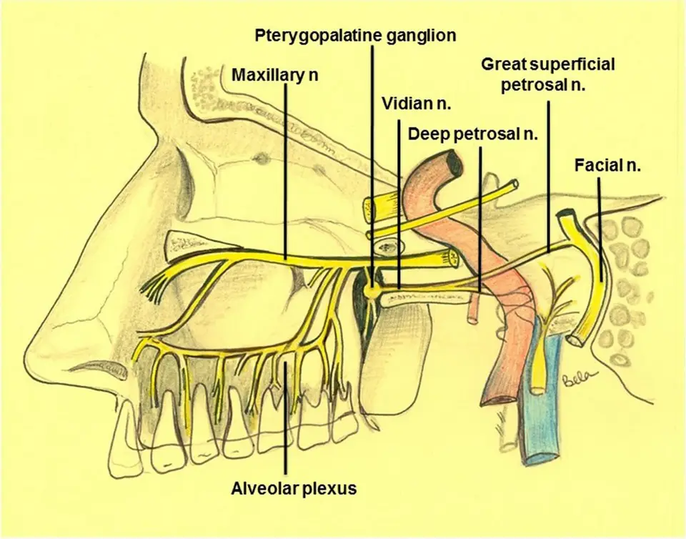
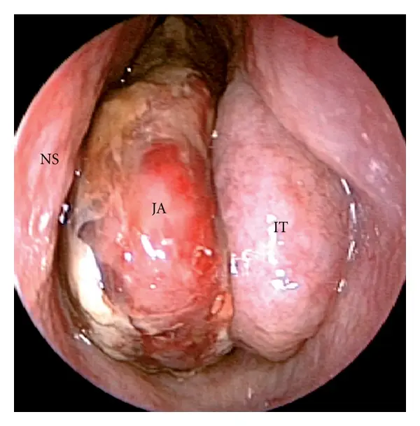
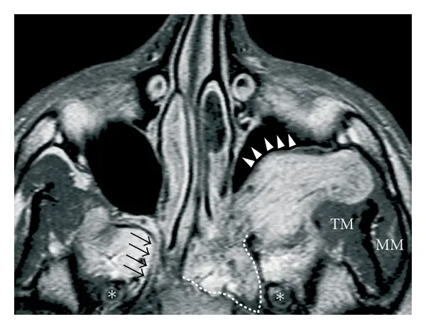
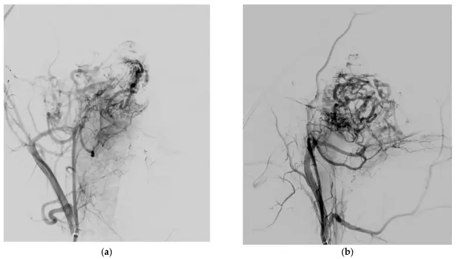

DX.9 — Angiofibrome nasopharyngien juvénile
L'angiofibrome nasopharyngien juvénile est une tumeur bénigne qui saigne abondamment ; il se révèle chez le garçon adolescent par une obstruction nasale unilatérale et des épistaxis répétéesS2. Sa simple suspicion interdit la biopsie, car le prélèvement d'une masse aussi vascularisée expose à une hémorragie massiveS1S2. L'imagerie injectée pose le diagnostic, l'angiographie cartographie les artères nourricières, puis l'exérèse endoscopique se fait après embolisation, en centre expérimentéS2S12.
1. Définition
L'Académie nationale de médecine définit le fibrome nasopharyngien comme une tumeur vasculaire du pourtour des choanes, qui touche surtout le garçon à la pubertéS1. Le groupe international de cancérologie de la tête et du cou le décrit en 2017 comme une tumeur vasculaire bénigne, localement agressive, presque exclusive du jeune hommeS3. La tumeur naît dans la région du foramen sphéno-palatin ; plusieurs auteurs situent son origine dans la fosse ptérygopalatine, à l'orifice du canal vidienS2.
2. Épidémiologie (Suisse, puis Europe)
En Suisse, l'Hôpital universitaire de Zurich a retrouvé dans ses archives 40 patients opérés depuis 1969S5. L'étude nationale danoise de 2026 compte 61 garçons entre 2003 et 2022, d'âge médian 16,5 ansS4. Elle mesure une incidence de 0,12 cas pour 100 000 personnes-années masculines, et de 0,43 pour 100 000 hommes âgés de 10 à 24 ansS4. Les chiffres européens, l'histoire naturelle et les enjeux de santé publique expliquent pourquoi ce diagnostic rare se traite en centre.
Chiffres européens et suisses
Le tableau réunit les séries qui donnent un chiffre ; la ligne suisse provient de Zurich, les autres d'Europe.
| Donnée | Valeur | Population et période | Source |
|---|---|---|---|
| Patients opérés retrouvés | 40, dont 13 revus après 15,7 ans en moyenne | Hôpital universitaire de Zurich, depuis 1969 | S5 |
| Incidence nationale | 0,12/100 000 personnes-années masculines ; 0,43/100 000 hommes de 10 à 24 ans | Danemark, 61 garçons, 2003–2022 | S4 |
| Incidence nationale ancienne | 0,4 cas par million d’habitants et par an | Danemark, série de Glad citée en 2012 | S2 |
| Part des tumeurs de la tête et du cou | 0,05 % | Revue de Brescia, 2012 | S2 |
| Âge et sexe | Âge moyen 18 ans (10 à 63) ; 100 % d’hommes | Varèse, 79 patients, 1999–2020 | S7 |
| Âge typique | 9 à 19 ans | Revue de Brescia, 2012 | S2 |
| Extension intracrânienne | 20 % des cas | Varèse, 2021 | S7 |
| Récidive | 25 % ; survie sans récidive à deux ans 77 % | Danemark, 2003–2022 | S4 |
L'incidence paraît nettement plus élevée au Moyen-Orient et en Inde qu'en Europe, ce qui interdit de transposer les grandes séries asiatiques à la SuisseS2.
Histoire naturelle
La tumeur grossit sous la muqueuse et suit les orifices naturels de la base du crâne, si bien que son trajet reste prévisible d'un patient à l'autreS2.
Elle régresse souvent seulement après le développement complet des caractères sexuels secondaires, ce qui suggère une dépendance hormonaleS2.
Un petit résidu postopératoire reste souvent stable ou involue, surtout après la puberté ; c'est pourquoi on ne réopère qu'une croissance prouvée en imagerieS9.
Au Danemark, la récidive survient surtout dans les deux ans suivant l'opération et touche exclusivement les stades avancésS4.
À Zurich, l'âge jeune au moment de l'opération paraît le principal facteur qui transforme un résidu silencieux en récidive symptomatiqueS5.
Enjeux de santé publique
La rareté de la tumeur concentre l'expérience dans quelques équipes, alors que l'exérèse endoscopique des formes avancées exige une équipe très entraînéeS12.
Une biopsie faite hors centre peut provoquer une hémorragie massive ; le premier enjeu reste donc l'orientation rapide de l'adolescent suspect vers l'ORLS1S2.
Les séries européennes récentes ne rapportent aucun décès : Zurich n'en compte aucun après voie infratemporale, et le Danemark ne compte aucune complication majeureS6S4.
3. Physiopathologie
La lésion ne se comprend qu'avec une base anatomique : rhinopharynx, foramen sphéno-palatin et fosse ptérygopalatine, dont chaque orifice mène à une structure vitaleS2. Des vaisseaux sans fibres élastiques et à musculeuse incomplète s'inscrivent dans un stroma fibreux ; ils ne se contractent pas, d'où des saignements prolongésS2. Les voies d'extension, la cascade en quatre temps et le tableau de corrélation relient chaque perturbation à son signe, son examen et son traitement.
Base à connaître : rhinopharynx et foramen sphéno-palatin
Le rhinopharynx est la cavité située derrière les choanes ; il reçoit en avant les deux fosses nasales et latéralement l'orifice de la trompe d'EustacheS1S2.
Le foramen sphéno-palatin fait communiquer la fosse nasale avec la fosse ptérygopalatine, où passent les branches de l'artère maxillaire et le nerf maxillaireS2S7.
La tumeur obstrue parce qu'elle naît à ce carrefour et pousse vers la choane, qu'elle comble d'un seul côté avant de gagner le rhinopharynxS2.
Elle saigne parce que l'artère maxillaire la nourrit à plein débit par des vaisseaux sans musculeuse, incapables de se contracter après une plaieS2S7.
Ce schéma montre la fosse ptérygopalatine et ses nerfs, vus de profil.. Le dessin anatomique place le ganglion ptérygopalatin entre le nerf maxillaire en haut et le nerf vidien en arrière.S2

- Le schéma ne dessine pas l'artère maxillaire, qui nourrit pourtant la tumeur dans la fosse ptérygopalatine.S2
Ce que l'image décide. Ce carrefour explique pourquoi l'imagerie doit vérifier chaque orifice avant l'exérèse.S2

Voies d'extension depuis la fosse ptérygopalatine
Chaque orifice dessine une voie d'extension que l'imagerie doit vérifier, dans l'ordre du tableauS2.
| Orifice | Où mène-t-il ? | Conséquence clinique |
|---|---|---|
| Foramen sphéno-palatin | Fosse nasale, nasopharynx, côté opposé | Obstruction nasale et épistaxis S2 |
| Fissure ptérygo-maxillaire élargie | Fosse infratemporale, muscles masticateurs, joue | Tuméfaction de la joue ; paroi postérieure du sinus maxillaire refoulée en avant S2 |
| Canal vidien | Artère carotide interne | Contact carotidien qui complique l’exérèse S2 |
| Foramen rond | Sinus caverneux, en dedans du nerf maxillaire | Extension intracrânienne extradurale S2 |
| Fissure orbitaire inférieure | Apex orbitaire | Exophtalmie et baisse de vision S2 |
L'atteinte de la dure-mère reste très rare, alors que l'extension intracrânienne extradurale n'est pas exceptionnelle dans les grandes tumeursS2.
L'os est envahi par deux mécanismes : la résorption par pression des parois et la diffusion le long des artères perforantes de la racine ptérygoïdienneS2.
Cascade en quatre temps
- L'amorce reste discutée : une hypothèse invoque un reliquat de la première artère branchiale, qui régresse normalement entre le 22e et le 24e jour embryonnaireS2.
- Le développement s'appuie sur des mutations activatrices de la bêta-caténine ; celle-ci active le récepteur des androgènes, ce qui expliquerait la quasi-exclusivité masculineS2.
- L'installation se fait par croissance sous-muqueuse, résorption osseuse par pression et envahissement de l'os spongieux de la racine ptérygoïdienne le long des artères perforantesS2.
- Le maintien dépend probablement des hormones sexuelles, car la tumeur régresse parfois après la puberté ; son mécanisme hormonal exact reste cependant débattuS2.
Les patients atteints de polypose adénomateuse familiale présentent plus souvent un angiofibrome, mais aucune mutation du gène APC n'a été retrouvée dans la tumeurS2.
Les gains des chromosomes 4, 6, 8 et X et les pertes des chromosomes 17, 22 et Y sont les anomalies les plus fréquentesS2.
Corrélation perturbation, exploration, thérapeutique
| Perturbation | Exploration qui la montre | Thérapeutique et mécanisme |
|---|---|---|
| Vaisseaux sans musculeuse, nourris par l’artère maxillaire | Prise de contraste intense, vides de signal en IRM, angiographie | Embolisation préopératoire qui réduit le saignement S2S7 |
| Origine dans la fosse ptérygopalatine | Canal vidien élargi ou érodé dans 96 % des cas | Fraisage du basisphénoïde au-delà de la limite visible S2 |
| Croissance sous-muqueuse | IRM ou scanner injecté, car l’endoscopie voit mal ce qui est sous la muqueuse | Surveillance par imagerie et non par endoscopie S2 |
| Apport artériel carotidien interne | Angiographie des deux axes carotidiens | Voie combinée ou externe si la carotide interne est englobée S2 |
| Dépendance hormonale probable | Âge et stade pubertaire | Surveillance d’un petit résidu après la puberté S9 |
4. Démarche diagnostique
Les graves passent d'abord : l'épistaxis sous antithrombotique (DX.2), le purpura thrombopénique immunologique (DX.6) et le cancer naso-sinusien (DX.10) s'excluent avant l'angiofibrome. Chez un garçon de 9 à 19 ans, l'association d'une obstruction nasale unilatérale et d'épistaxis récidivantes doit faire évoquer l'angiofibrome immédiatementS2. La suspicion modifie aussitôt la conduite, car elle contre-indique toute biopsie et impose une imagerie injectée avant tout gesteS1S2. Le raisonnement pas à pas montre où le débutant se trompe et comment l'éviter.
Raisonnement pas à pas
Un garçon de quinze ans est vu pour un nez bouché à droite depuis plusieurs mois et pour des saignements répétés de la même narine.
| Étape | Ce que le médecin fait | Pourquoi |
|---|---|---|
| Mécanisme | Il pense à une masse postérieure qui naît du foramen sphéno-palatin | Une masse unilatérale explique à la fois l’obstruction et les saignements du même côté S2 |
| Signe | Il cherche une otite séreuse droite, une joue gonflée ou une exophtalmie | Chaque signe indique une voie d’extension franchie S2 |
| Examen | Il adresse à l’ORL pour une endoscopie, puis demande scanner et IRM injectés | L’endoscopie montre la masse, l’imagerie prouve son origine ptérygopalatine S2 |
| Décision | Il interdit tout prélèvement et oriente vers un centre avec radiologie interventionnelle | La biopsie fait courir le risque d’une hémorragie massive S1S2 |
L'erreur classique du débutant est de prescrire une cautérisation antérieure et un décongestionnant, puis de revoir le patient seulement à la récidive suivante.
Elle s'évite par une règle simple : une épistaxis unilatérale qui récidive chez un garçon pubère avec un nez bouché du même côté impose une endoscopieS2.
Diagnostics discriminants
Le tableau classe les diagnostics par gravité, puis par fréquence ; chaque ligne donne l'élément qui tranche et l'erreur qui fait perdre du temps.
| Diagnostic | Élément qui tranche | Piège | Conduite si positif |
|---|---|---|---|
| Cancer naso-sinusien ou carcinome du nasopharynx (DX.10) | Adulte, masse sans le profil d’origine ptérygopalatine ; l’adulte de plus de 30 ans fait rarement un angiofibrome | Biopsier par réflexe une masse vasculaire | Imagerie et angiographie avant toute biopsie S16 |
| Angiofibrome nasopharyngien juvénile | Garçon pubère, origine ptérygopalatine, prise de contraste intense | Croire qu’un profil typique dispense de l’imagerie | Imagerie injectée, puis centre ORL S2 |
| Hémangiopéricytome, hémangiome capillaire lobulaire, paragangliome | Autre âge, autre sexe et autre mode d’extension | Les confondre sur la seule hypervascularisation | Avis ORL et radiologique spécialisé S2 |
| Épistaxis antérieure essentielle (DX.1) | Point saignant antérieur, sans masse ni obstruction persistante | Ne pas faire d’endoscopie chez un adolescent qui récidive | Endoscopie si l’obstruction persiste S2 |
L'erreur classique du débutant consiste à cautériser une épistaxis répétée sans regarder la fosse nasale postérieure ; l'endoscopie évite ce piège, car elle montre la masse derrière le cornet moyenS2.
5. Anamnèse ciblée et drapeaux rouges
L'interrogatoire précise d'abord l'obstruction nasale, puis les épistaxis, car leur association unilatérale chez un garçon pubère oriente d'embléeS2. Il recherche ensuite les symptômes d'extension : œil, joue, oreille, voix et olfaction, car chacun signale une voie anatomique franchieS2S7. Les drapeaux rouges imposent une action immédiate, et une question vise toujours un projet de biopsie déjà programmé ailleursS1.
Obstruction nasale : caractérisation
| Caractère | Ce qu’on cherche | Typique ? |
|---|---|---|
| Siège | Une seule fosse nasale, longtemps du même côté | Oui : la tumeur naît d’un côté S2 |
| Mode | Installation progressive, sur des mois | Oui : la croissance est lente et sous-muqueuse S2 |
| Fréquence | 80 à 90 % des patients ; 90 % au Danemark ; 50 % à Varèse | Oui, c’est le maître symptôme S2S4S7 |
| Signes associés | Rhinorrhée, voix nasonnée (rhinolalie, 14 % à Varèse) | Oui S2S7 |
Une obstruction bilatérale d'emblée est atypique ; elle oriente plutôt vers une autre cause, car l'angiofibrome ne franchit la ligne médiane que tardivementS2.
Épistaxis : caractérisation
| Caractère | Ce qu’on cherche | Typique ? |
|---|---|---|
| Côté | Même côté que l’obstruction, à chaque épisode | Oui S2 |
| Répétition | Épisodes récidivants, d’abondance variable | Oui : les vaisseaux sans musculeuse ne se contractent pas S1S2 |
| Fréquence | 45 à 60 % des patients ; 59 % au Danemark ; 55 % à Varèse | Fréquente, mais inconstante S2S4S7 |
| Déclencheur | Manipulation ou tentative de prélèvement de la masse | Oui : tout traumatisme de la masse fait saigner S1S2 |
| Gravité | Malaise, pâleur, transfusion antérieure | Signe un retentissement qui impose un bilan urgent S14 |
Une épistaxis isolée, sans obstruction, est atypique ; elle ne dispense pourtant pas d'endoscopie si elle récidive du même côté chez un garçon pubèreS2.
Symptômes d'extension
| Symptôme | Fréquence | Voie franchie | Typique ? |
|---|---|---|---|
| Céphalées | 25 % (Brescia) ; 12 % (Varèse) | Blocage des sinus | Fréquent, peu spécifique S2S7 |
| Otalgie, oreille bouchée | — | Trompe d’Eustache comprimée, otite séreuse unilatérale | Évocateur si unilatéral S2 |
| Exophtalmie | 10 % (Varèse) | Orbite par la fissure orbitaire inférieure | Signe un stade avancé S2S7 |
| Diplopie | 6 % (Varèse) | Orbite ou sinus caverneux | Signe un stade avancé S7 |
| Baisse de l’acuité visuelle | 2 % (Varèse) | Apex orbitaire | Urgence d’imagerie S2S7 |
| Tuméfaction de la joue | — | Fosse infratemporale | Signe un stade avancé S2S3 |
| Trouble de l’olfaction | — | — | Possible S2 |
Drapeaux rouges
| Drapeau rouge | Signification | Action immédiate |
|---|---|---|
| Épistaxis abondante avec malaise ou tachycardie | Saignement postérieur grave | Fenêtre d’urgence du point 11 S14 |
| Baisse de vision ou exophtalmie | Atteinte orbitaire | Imagerie injectée et avis ORL le jour même S2 |
| Diplopie ou déficit d’un nerf crânien | Extension vers le sinus caverneux | Imagerie et centre de chirurgie de la base du crâne S2S7 |
| Biopsie prévue sur une masse nasale postérieure | Risque d’hémorragie massive | Annuler le prélèvement et obtenir l’imagerie S1S2 |
6. Examen physique ciblé, région par région
L'examen suit l'ordre utile au lit du patient : état hémodynamique, fosses nasales, orbite et vision, face, oreilles puis nerfs crâniens. Chaque temps cherche le normal, puis le signe d'une voie d'extension, sans jamais toucher la masse avec un instrument tranchantS1S2.
Région 1 — état hémodynamique
Le signe recherché est la tachycardie ou l'hypotension, car une épistaxis postérieure peut devenir grave et menacer la vieS14.
Le geste consiste à prendre pouls et pression avant l'examen nasal ; une instabilité fait passer à la conduite d'urgence du point 11S14.
Région 2 — fosses nasales
Le geste commence par une rhinoscopie antérieure, puis l'ORL réalise une rhinoscopie postérieure et une fibroscopie, qui fondent le diagnostic cliniqueS1.
Le signe est une masse lobulée, lisse et très vascularisée, située derrière le cornet moyen et qui comble la choaneS2.
Cette endoscopie montre un angiofibrome dans la fosse nasale gauche.. L'optique est placée dans la fosse nasale gauche, entre la cloison et le cornet inférieur.S2

- La fibrine blanchâtre ne signe pas une nécrose maligne ; la masse ne doit pas être prélevée.S2
Ce que l'image décide. Cet aspect impose une imagerie injectée et interdit la biopsie.S2
Le piège consiste à palper la masse ou à la prélever pour vérifier qu'elle saigne : la biopsie est formellement contre-indiquéeS1S2.
Région 3 — orbite et vision
Le signe recherché est une exophtalmie unilatérale ou une altération de la vision, qui signent l'envahissement de l'orbiteS2.
Le geste compare les deux globes de profil, mesure l'acuité de chaque œil et teste la motilité oculaire à la recherche d'une diplopieS2S7.
Le piège est d'attribuer une diplopie à la fatigue ; elle doit faire rechercher une extension vers l'apex orbitaire ou le sinus caverneuxS2.
Région 6 — nerfs crâniens
Le geste consiste à tester la sensibilité de la joue, l'olfaction et l'oculomotricité, car l'extension vers le foramen rond refoule le nerf maxillaireS2.
Un déficit neurologique impose une imagerie et un avis de chirurgie de la base du crâne, car il témoigne d'une extension avancéeS2.
7. Approche syndromique
Trois syndromes s'associent : 7.1 le syndrome obstructif nasal unilatéral, 7.2 le syndrome hémorragique, et 7.3 le syndrome d'extension régionaleS2. Le tableau éclate chaque syndrome en signes fonctionnels et physiques ; le dernier syndrome indique déjà un stade avancéS2S3.
| Syndrome | Signes fonctionnels | Signes physiques |
|---|---|---|
| 7.1 Obstructif nasal unilatéral | Nez bouché d’un côté, rhinorrhée, voix nasonnée | Masse lisse et lobulée qui comble la choane S2 |
| 7.2 Hémorragique | Épistaxis unilatérales récidivantes | Saignement au contact de la masse S1S2 |
| 7.3 Extension régionale | Céphalées, oreille bouchée, diplopie, baisse de vision | Exophtalmie, tuméfaction de la joue, otite séreuse, déficit d’un nerf crânien S2S7 |
Définition et mécanisme des signes
| Signe | Définition | Geste de recherche | Mécanisme |
|---|---|---|---|
| Rhinolalie fermée | Voix qui manque de résonance nasale | Écoute de la parole | Masse qui ferme le nasopharynx S2S7 |
| Exophtalmie | Protrusion du globe oculaire | Inspection de profil et d’en haut | Tumeur entrée dans l’orbite S2 |
| Otite séreuse | Liquide derrière un tympan fermé | Otoscopie comparative | Trompe d’Eustache comprimée S2 |
| Tuméfaction jugale | Relief de la joue | Inspection comparée des hémifaces | Extension infratemporale S2 |
8. Diagnostic positif et critères
Le diagnostic positif repose sur la clinique et l'imagerie, sans biopsie préalableS1S12. Le diagnostic d'imagerie repose sur trois éléments : le site d'origine, l'hypervascularisation après injection et le mode d'extensionS2. Le stade choisit ensuite la voie d'abord ; la classification d'Andrews et Fisch vient de l'Hôpital universitaire de ZurichS6.
Ce qui suffit et ce qui ne suffit pas
| Élément | Suffit-il ? | Raison |
|---|---|---|
| Garçon pubère avec obstruction et épistaxis unilatérales | Non | Le profil oriente, mais d’autres masses hypervascularisées existent S2 |
| Masse vasculaire derrière le cornet moyen en endoscopie | Non | Elle impose l’imagerie injectée S2 |
| Origine ptérygopalatine, prise de contraste intense et extension typique | Oui, pour le diagnostic préopératoire | Les trois critères d’imagerie concordent S2 |
| Canal vidien élargi ou érodé | Argument fort | Il est présent dans jusqu’à 96 % des cas S2 |
| Histologie de la pièce opératoire | Confirmation définitive | Elle s’obtient après l’exérèse S7 |
Classifications et usage
Andrews, Fisch et leurs collègues zurichois ont proposé en 1989 une classification fondée sur la croissance tumorale, pour choisir la voie d'abordS6.
| Stade d’Andrews et Fisch | Extension | Usage |
|---|---|---|
| I | Nasopharynx et fosse nasale ; destruction osseuse nulle ou limitée au foramen sphéno-palatin | Voie endoscopique S2 |
| II | Fosse ptérygopalatine ou sinus maxillaire, ethmoïdal ou sphénoïdal, avec destruction osseuse | Voie endoscopique S2 |
| IIIa | Fosse infratemporale ou orbite, sans atteinte intracrânienne | Endoscopie en centre expérimenté S2 |
| IIIb | Fosse infratemporale ou orbite, avec atteinte intracrânienne extradurale parasellaire | Endoscopie possible jusqu’à ce stade dans les grandes séries S2 |
| IVa | Intradural, sans sinus caverneux, hypophyse ni chiasma | Voie externe ou combinée S2 |
| IVb | Intradural, avec sinus caverneux, hypophyse ou chiasma | Voie externe ou combinée ; radiothérapie d’un résidu S2S13 |
La classification de Radkowski, très employée, est plus fine que celle d'Andrews et Fisch, car elle découpe l'extension en sous-stadesS2.
| Stade de Radkowski | Extension |
|---|---|
| IA | Choanes ou voûte du nasopharynx S2 |
| IB | Choanes ou voûte, avec au moins un sinus de la face S2 |
| IIA | Extension latérale minime dans la fosse ptérygopalatine S2 |
| IIB | Fosse ptérygopalatine entièrement occupée, avec ou sans érosion des os de l’orbite S2 |
| IIC | Fosse infratemporale ou extension en arrière des lames ptérygoïdiennes S2 |
| IIIA | Érosion de la base du crâne avec extension intracrânienne minime S2 |
| IIIB | Extension intracrânienne étendue, avec ou sans sinus caverneux S2 |
La classification de Radkowski permet surtout de comparer les séries ; au Danemark, le stade IIB est le plus fréquent, avec 31,3 % des patientsS4.
La classification de l'Université de Pittsburgh ajoute la vascularisation résiduelle après embolisation, qui fait passer la tumeur aux stades IV ou VS2.
Au Danemark, le stade de Radkowski est corrélé au saignement opératoire, à la dévascularisation obtenue et à l'apport de la carotide interneS4.
9. Examens complémentaires
9.a La référence est l'histologie de la pièce opératoire, car le diagnostic préopératoire repose sur l'imagerie et non sur une biopsieS7S2.
9.b En première intention, l'ORL réalise une endoscopie nasale, puis le médecin demande une tomodensitométrie et une IRM injectéesS2.
9.c Les alternatives tiennent compte d'une allergie, d'une contre-indication à l'IRM ou d'un âge inhabituelS16.
9.d En deuxième intention, l'angiographie et le bilan préopératoire préparent l'embolisation et la chirurgieS2S7.
Le tableau d'interprétation résume chaque résultat, sa signification et la conduite qu'il commande.
Endoscopie nasale
L'indication est toute obstruction nasale unilatérale persistante ou toute épistaxis récidivante du même côté chez un garçon pubèreS2.
L'endoscopie montre une masse lobulée et hypervascularisée de la moitié postérieure de la fosse nasale ; cet aspect doit éveiller la suspicion immédiatementS2.
Le piège est double : l'endoscopie voit mal la croissance sous-muqueuse, et elle ne doit jamais servir à préleverS2S1.
Tomodensitométrie injectée
Le scanner injecté montre l'os : remodelage, amincissement et refoulement antérieur de la paroi postérieure du sinus maxillaire, érosion de la racine ptérygoïdienneS2.
Il montre aussi l'élargissement de l'artère maxillaire et l'élargissement ou l'érosion de la partie antérieure du canal vidienS2.
Le piège consiste à juger l'extension intracrânienne au scanner seul, car l'IRM montre mieux le sinus caverneux et la dure-mèreS2.
IRM injectée
L'IRM montre une prise de contraste intense et homogène, avec des vides de signal en T1 et en T2 qui correspondent aux gros vaisseaux intratumorauxS2.
Elle décrit mieux que le scanner l'envahissement de l'os spongieux et les rapports avec le sinus caverneux et la dure-mèreS2.
Cette IRM axiale injectée montre un angiofibrome étendu du côté gauche.. La séquence pondérée en T1 après gadolinium passe par les sinus maxillaires et le basisphénoïde.S2

- Le canal vidien droit, indiqué par les flèches noires, sert de comparaison normale et ne doit pas être lu comme envahi.S2
Ce que l'image décide. Cette extension impose une angiographie, puis une exérèse en centre avec fraisage du basisphénoïde.S2
L'IRM postopératoire précoce, réalisée après l'ablation du méchage et dans les 72 heures, détecte un résidu avant que la cicatrice inflammatoire ne brouille l'imageS2.
Alternatives
| Situation | Examen proposé | Raison |
|---|---|---|
| Allergie aux produits de contraste iodés | IRM injectée seule | Le scanner et l’IRM se complètent, mais l’IRM suffit pour les parties molles S2 |
| IRM impossible | Scanner injecté | Il montre l’os et le canal vidien S2 |
| Adulte de plus de 30 ans | Même bilan, puis histologie | La présentation est rare et impose d’éliminer un carcinome du nasopharynx S16 |
Angiographie numérisée
L'angiographie numérisée reste nécessaire pour cartographier toutes les artères nourricières, car l'angio-IRM ne les montre pas toutesS2.
Les deux axes carotidiens s'explorent, car un apport bilatéral existe dans environ 36 % des cas d'une revueS2.
À Varèse, l'embolisation est passée par les branches sphéno-palatines de l'artère maxillaire dans 44,3 % des cas et par l'artère pharyngienne ascendante dans 25,3 %S7.
Cette angiographie montre le réseau tumoral d'un angiofibrome avant embolisation.. Le cathéter est placé dans la carotide externe proximale, en incidence de face puis de profil.S7

- Une anastomose vers la carotide interne peut se cacher dans ce réseau ; elle se cherche avant toute injection de particules.S7
Ce que l'image décide. Ces artères nourricières sont embolisées par particules, puis la tumeur est retirée dans les 24 heures.S7
Le piège est l'anastomose entre carotide externe et carotide interne : une particule qui la franchit provoque un infarctus rétinien ou cérébralS7.
Bilan préopératoire
L'anesthésiste doit connaître la chirurgie endoscopique de la base du crâne, et l'équipe prévoit un récupérateur de sang peropératoireS2.
À Varèse, la perte sanguine peropératoire moyenne atteint 784 mL, avec des extrêmes de 40 à 5200 mLS7.
Au Danemark, la perte médiane atteint 500 mL ; elle augmente avec le stade de Radkowski et l'apport de la carotide interneS4.
Interprétation des résultats
| Résultat | Signification | Conduite |
|---|---|---|
| Masse hypervascularisée derrière le cornet moyen | Suspicion d’angiofibrome | Aucune biopsie ; imagerie injectée S1S2 |
| Canal vidien élargi, paroi postérieure du sinus maxillaire refoulée | Origine ptérygopalatine | Diagnostic préopératoire retenu S2 |
| Vides de signal et prise de contraste intense | Gros vaisseaux intratumoraux | Angiographie avant chirurgie S2 |
| Apport carotidien bilatéral | Saignement accru | Embolisation bilatérale de l’artère maxillaire S2 |
| Carotide interne englobée | Exérèse endoscopique risquée | Voie combinée ou externe S2 |
| Prise de contraste nodulaire sur l’IRM des 72 heures | Résidu | Surveillance rapprochée ou reprise si croissance S2S9 |
10. Arbre décisionnel
L'arbre part d'un adolescent qui saigne du nez ; il traite d'abord ce qui menace, puis il discrimineS2S14.
- Si le patient est instable ou saigne abondamment, le médecin applique la conduite d'urgence du point 11 avant toute explorationS14.
- Si un antithrombotique, une thrombopénie ou une masse destructrice de l'adulte apparaît, le médecin traite d'abord DX.2, DX.6 ou DX.10.
- Si un garçon pubère associe obstruction et épistaxis du même côté, l'ORL réalise une endoscopie nasale sans aucun prélèvementS1S2.
- Si l'endoscopie montre une masse vasculaire postérieure, le médecin demande scanner et IRM injectés, puis il adresse le patient en centreS2.
- Si l'imagerie confirme l'origine ptérygopalatine, l'équipe réalise une angiographie bilatérale et une embolisation dans les 24 à 48 heures précédant l'exérèseS2.
- Si la carotide interne est englobée ou si l'extension est intradurale, l'équipe choisit une voie combinée ou externeS2.
- Si l'IRM postopératoire montre un résidu, le médecin le surveille et ne le traite que s'il grossitS9.
11. Prise en charge selon les recommandations suisses
11.A Le but est une exérèse complète avec un saignement maîtrisé ; les séries endoscopiques européennes laissent un résidu chez 8,6 % à 8,9 % des patientsS2S7.
11.B Une hémorragie grave suit la conduite d'urgence chronologique, puis le traitement suit un ordre fixe : embolisation, puis exérèse, enfin surveillanceS2S7. L'embolisation et les temps de l'exérèse endoscopique se détaillent à part ; les grandes séries chiffrent leurs résultatsS2S7S8. Les moyens thérapeutiques et les situations spéciales précisent chaque choix ; aucun médicament ne fait régresser la tumeur de façon fiableS3.
11.C La surveillance repose sur l'IRM, car l'endoscopie voit mal la récidive sous-muqueuseS2.
11.D Le pronostic reste bon après exérèse complète ; les critères de sortie s'énumèrent un par un.
Urgence — conduite chronologique
| Moment | Geste | Délai et raison |
|---|---|---|
| Minutes 0 à 5 | Pouls, pression, voies aériennes, puis compression | Une épistaxis postérieure peut menacer la vie S14 |
| Minutes 5 à 30 | Méchage ou tamponnement postérieur si le saignement persiste | Le tamponnement reste le moyen disponible partout S14 |
| Avant tout transfert | Aucune biopsie, aucune manipulation de la masse | Le prélèvement provoque une hémorragie massive S1S2 |
| Heures | Transfert vers un centre ORL avec radiologie interventionnelle | Embolisation et chirurgie y sont disponibles S2S7 |
| 24 à 48 heures avant l’exérèse | Embolisation par particules | Ce délai évite la revascularisation S2 |
| Au plus 7 jours après l’embolisation | Exérèse | L’occlusion par particules reste temporaire S7 |
Le piège qui fait perdre du temps est une biopsie demandée pour « confirmer » une masse vasculaire ; elle n'apporte rien et peut provoquer une hémorragie massiveS1S2.
Le critère de transfert est simple : toute masse nasale postérieure vasculaire va vers un centre qui réunit ORL, radiologie interventionnelle et anesthésie spécialiséeS2S12.
Ordre du traitement
- L'embolisation préopératoire réduit le saignement, ferme les artères inaccessibles, raccourcit l'opération et améliore la visibilitéS7.
- Les particules d'alcool polyvinylique sont le matériau le plus employé pour cette embolisationS2.
- Une taille de particules de 150 à 350 µm permet de concilier la sécurité vis-à-vis des collatérales et une dévascularisation efficaceS7.
- À Varèse, 79 embolisations ont précédé l'exérèse de moins de 24 heures, sans complication ischémique ni hémorragiqueS7.
- L'exérèse endoscopique est la méthode de choix des formes peu ou modérément avancées, selon une revue européenne de 1586 casS8.
- L'équipe expose largement la tumeur, la retire par fragments si elle est volumineuse et fraise le basisphénoïde au-delà de l'infiltration visibleS2.
- Les voies externes ou combinées gardent leur place si la carotide interne est englobée, si elle nourrit massivement la tumeur ou si l'extension est intraduraleS2S8.
Embolisation : technique et risques
À Varèse, l'abord se fait par l'artère fémorale ; un microcathéter atteint chaque artère nourricière, puis les particules s'injectent lentement jusqu'à l'arrêt du fluxS7.
Des spires de platine complètent l'occlusion lorsque les particules ne suffisent pas, surtout si l'artère maxillaire est très dilatéeS7.
Dans cette série, 81 % des embolisations se sont faites sous anesthésie générale et le reste sous sédation consciente ; seules des cervicalgies passagères ont été notéesS7.
Si les deux carotides externes nourrissent la tumeur, l'embolisation de l'artère maxillaire se fait des deux côtésS2.
Les agents liquides comme l'Onyx, injectables aussi par ponction directe, pénètrent plus loin dans les capillaires tumoraux et restent mieux visibles en radioscopieS7.
Si une très grosse tumeur englobe la carotide interne, un test d'occlusion au ballonnet précède une éventuelle occlusion de ce vaisseauS2.
Exérèse endoscopique : temps opératoires
- La tumeur est exposée par turbinectomie moyenne, ethmoïdectomie, large méatotomie moyenne, sphénoïdotomie et résection du tiers postérieur de la cloisonS2.
- Il résèque la paroi postérieure du sinus maxillaire aussi loin en dehors que l'exige l'extension ptérygopalatine ou infratemporaleS2.
- Une maxillectomie médiale élargie selon Sturmann-Canfield améliore l'accès latéral lorsque la fosse infratemporale est largement envahieS2.
- Deux chirurgiens opèrent à quatre mains, ce qui maintient le plan de clivage entre la tumeur et les tissus voisinsS2.
- Des matériaux hémostatiques sont prêts : gélatine résorbable, cellulose oxydée, collagène microfibrillaire, colle de fibrine ou scellants synthétiquesS2.
- Le fraisage final du basisphénoïde retire le résidu invisible, car tous les résidus de Brescia siégeaient dans cet osS2.
Au Danemark, 97 % des patients ont reçu une embolisation préopératoire et 86 % une chirurgie endoscopique guidée par l'imageS4.
Résultats des grandes séries
Le tableau compare les deux séries endoscopiques de référence citées par l'équipe de Brescia ; leurs patients ont des stades comparablesS2.
| Donnée | Mohammadi Ardehali | Nicolai (Brescia) |
|---|---|---|
| Patients | 47 | 46 S2 |
| Âge moyen | 17,1 ans (7 à 37) | 17 ans (10 à 35) S2 |
| Embolisation préopératoire | 5 patients | 40 patients S2 |
| Perte sanguine moyenne | 1336,2 mL | 580 mL S2 |
| Hospitalisation moyenne | 3,1 jours | 5 jours S2 |
| Suivi moyen | 33,1 mois | 73 mois S2 |
| Persistance | 19,1 % | 8,6 % S2 |
La revue de 2023 réunit 75 articles et 1586 patients ; la voie endoscopique y récidive moins que la voie ouverteS8.
Pour la récidive, la voie endoscopique assistée et la voie endoscopique pure ne sont pas significativement différentes dans cette revueS8.
Moyens thérapeutiques
Le tableau remplace celui des médicaments, car aucune molécule ne constitue un traitement validé de l'angiofibromeS3.
| Moyen | Indication | Résultat chiffré | Limite majeure |
|---|---|---|---|
| Exérèse endoscopique après embolisation | Stades I à IIIb d’Andrews selon l’expérience | Résidu 8,6 % (46 patients, Brescia) ; 8,9 % (Varèse) | Courbe d’apprentissage S2S7 |
| Voie externe (infratemporale, transfaciale) | Carotide englobée, extension intradurale | 15 patients à Zurich : 14 guéris, 1 récidive réopérée | Morbidité plus élevée S6S5 |
| Radiothérapie conventionnelle | Résidu critique qui grossit, tumeur non résécable | Contrôle local 90 % (22 patients, 30 à 36 Gy) | Complications tardives 32 % S2 |
| Protonthérapie | Forme avancée | Contrôle local 100 % (10 patients, 45 Gy) | Recul médian de 27 mois S10 |
| Chimiothérapie, hormonothérapie | Aucune indication courante | Inefficaces | — S3 |
Le flutamide, antiandrogène, a donné des réponses contradictoires ; une régression n'a été observée que chez les patients pubères, dans une série de 20 formes avancéesS2.
À Heidelberg, la protonthérapie a obtenu une rémission complète chez 5 patients sur 10, avec une toxicité aiguë de bas grade seulementS10.
À Zurich, la voie externe a entraîné des complications chez 4 patients sur 4, contre 3 sur 9 après voie endoscopiqueS5.
Situations spéciales
| Situation | Conduite | Raison |
|---|---|---|
| Enfant prépubère | Éviter la radiothérapie si une autre option existe | Retard de croissance et insuffisance hypophysaire sont rapportés après irradiation S2 |
| Adolescent pubère avec petit résidu | Surveillance par IRM | Le résidu reste souvent stable ou involue S9 |
| Adulte de plus de 30 ans | Bilan complet et histologie | Présentation rare, à distinguer d’un carcinome S16 |
| Patient atteint de polypose adénomateuse familiale | Penser à l’angiofibrome devant une masse nasale | Association plus fréquente S2 |
| Résidu au contact de la carotide, du nerf optique ou du sinus caverneux | Radiothérapie stéréotaxique ou conformationnelle si croissance | Une réintervention y serait très morbide S9 |
Surveillance
| Quoi | Quand | Seuil d’action |
|---|---|---|
| IRM injectée | Après ablation du méchage, dans les 72 heures | Prise de contraste suspecte : surveillance rapprochée S2 |
| IRM ou scanner injectés | Tous les 6 à 8 mois pendant au moins 3 ans | Croissance démontrée sur des examens successifs S2S9 |
| Angio-IRM | Selon le résidu, l’âge et l’exérèse | Prise de contraste suspecte ou exérèse incomplète S2 |
| Examen ORL et symptômes | À chaque contrôle | Nouvelle obstruction ou nouvelle épistaxis S2 |
La surveillance la plus serrée vise les deux premières années, car la récidive danoise survient surtout dans ce délaiS4.
Pronostic
Au Danemark, la survie sans récidive à deux ans atteint 77 % ; les récidives touchent seulement les stades III et IV de ChandlerS4.
À Zurich, les résidus opérés par voie endoscopique sont restés stables, avec un intervalle moyen de 2 ans entre deux examensS5.
Un âge inférieur à 18 ans, une tumeur de plus de 4 cm et un stade de Radkowski élevé augmentent le risque de récidiveS2.
La guérison se définit par l'absence de résidu à l'IRM précoce ; Brescia n'a vu aucune lésion apparaître ensuite chez ces patientsS2.
Critères de sortie
- Le méchage a été retiré et l'IRM postopératoire précoce a été réalisée dans les 72 heuresS2.
- Le patient ne présente aucun déficit neurologique ni visuel nouveau, comme dans la série de VarèseS7.
- Le calendrier des IRM, tous les 6 à 8 mois pendant au moins 3 ans, a été remis au patientS2.
- Le patient sait qu'une nouvelle obstruction ou une nouvelle épistaxis impose de reconsulter l'ORLS2.
La durée moyenne d'hospitalisation a été de 5 jours dans la série endoscopique de BresciaS2.
12. Prévention
La prévention primaire n'existe pas, car l'origine embryonnaire et hormonale de la tumeur reste une hypothèseS2. La prévention secondaire consiste à reconnaître tôt l'adolescent qui associe obstruction unilatérale et épistaxis, car le stade conditionne la récidive (point 2)S2S4. La prévention tertiaire vise les complications du traitement : embolisation, chirurgie et radiothérapie ont chacune leurs risques propresS7S2.
Prévention tertiaire
L'embolisation choisit des particules d'au moins 150 µm et repère les anastomoses entre carotide externe et interne, car leur franchissement rend aveugleS7.
Une observation lucernoise de 2025 rapporte une occlusion de l'artère centrale de la rétine après embolisation d'un angiofibromeS11.
Dans une série de 27 patients irradiés, 4 ont présenté des complications tardives : retard de croissance, panhypopituitarisme, nécrose temporale ou cataracteS2.
La protonthérapie réduit les risques estimés d'atteinte neurocognitive et de cancer radio-induit du système nerveux central par rapport aux photonsS10.
13. Points clés
- Un garçon pubère qui saigne et se bouche du même côté a un angiofibrome jusqu'à preuve du contraireS2.
- La suspicion d'angiofibrome contre-indique toute biopsie, car le prélèvement provoque une hémorragie massiveS1S2.
- Le scanner et l'IRM injectés posent le diagnostic ; l'angiographie bilatérale prépare l'embolisationS2.
- L'exérèse endoscopique suit l'embolisation de 24 à 48 heures dans un centre expérimentéS2S12.
- Une IRM dans les 72 heures, puis tous les 6 à 8 mois pendant 3 ans, dépiste le résiduS2.
14. Pièges et questions fréquentes à l'examen fédéral suisse
| Question | Bonne réponse | Raison |
|---|---|---|
| Un garçon de 15 ans a une obstruction nasale droite et des épistaxis droites : faut-il biopsier la masse vue au cabinet ? | Non. | La biopsie est contre-indiquée ; l’imagerie injectée s’impose (point 5) S1S2 |
| Quel signe radiologique soutient l’origine ptérygopalatine ? | L’élargissement du canal vidien. | Il est présent dans jusqu’à 96 % des cas (point 8) S2 |
| Pourquoi explorer les deux axes carotidiens ? | L’apport est bilatéral dans environ 36 % des cas. | Une embolisation unilatérale laisserait saigner la tumeur (point 9) S2 |
| Combien de temps avant l’exérèse se fait l’embolisation ? | 24 à 48 heures avant. | Un délai plus long expose à la revascularisation (point 11) S2 |
| Un petit résidu, stable sur deux IRM, chez un garçon pubère : faut-il réopérer ? | Non. | On ne retraite qu’un résidu qui grossit (point 11) S9 |
| Quand faire la première IRM postopératoire ? | Dans les 72 heures, après l’ablation du méchage. | Après 3 à 4 mois, la cicatrice inflammatoire imite un résidu (point 11) S2 |
| Une otite séreuse unilatérale chez un adolescent qui saigne du nez est-elle banale ? | Non. | Elle peut traduire une masse du nasopharynx (point 6) S2 |
| La chimiothérapie ou l’hormonothérapie sont-elles des traitements usuels ? | Non. | Elles sont jugées inefficaces (point 11) S3 |
Sources
Toutes les sources ont été consultées le 11.11.2026 (Europe/Zurich).
- [S1] Académie nationale de médecine. Dictionnaire de l'Académie : « fibrome nasopharyngien ». https://www.academie-medecine.fr/le-dictionnaire/index.php?q=fibrome+nasopharyngien
- [S2] Nicolai P, Schreiber A, Bolzoni Villaret A (Université de Brescia). Juvenile angiofibroma: evolution of management. International Journal of Pediatrics 2012;2012:412545. Texte intégral CC BY. https://doi.org/10.1155/2012/412545
- [S3] López F, Triantafyllou A, Snyderman CH, et al. (International Head and Neck Scientific Group). Nasal juvenile angiofibroma: current perspectives with emphasis on management. Head & Neck 2017;39:1033-45 (résumé). https://doi.org/10.1002/hed.24696
- [S4] El Haddouchi M, Eriksen PRG, Dahl RH, et al. (Rigshospitalet, Copenhague). Juvenile nasopharyngeal angiofibroma: nationwide study on incidence, diagnosis, treatment, and recurrence. Rhinology 2026;64(3):405-14 (résumé). https://doi.org/10.4193/Rhin24.550
- [S5] Epprecht L, Mosimann M, Vital D, Holzmann D (Hôpital universitaire de Zurich). Morbidity and volumetric progression in juvenile nasopharyngeal angiofibroma in a long-term follow-up. J Neurol Surg B Skull Base 2018;79:533-7 (résumé). https://doi.org/10.1055/s-0038-1635255
- [S6] Andrews JC, Fisch U, Valavanis A, Aeppli U, Makek MS (Hôpital universitaire de Zurich). The surgical management of extensive nasopharyngeal angiofibromas with the infratemporal fossa approach. Laryngoscope 1989;99:429-37 (résumé). https://doi.org/10.1288/00005537-198904000-00013
- [S7] Giorgianni A, Molinaro S, Agosti E, et al. (Varèse, Insubria). Twenty years of experience in juvenile nasopharyngeal angiofibroma preoperative endovascular embolization. J Clin Med 2021;10(17):3926. Texte intégral CC BY. https://doi.org/10.3390/jcm10173926
- [S8] Jurlina M, Pupić-Bakrač J, Pupić-Bakrač A. Endoscopic, endoscopic-assisted and open approaches in the treatment of juvenile angiofibroma: 1586 cases. Eur Arch Otorhinolaryngol 2023;280:2081-9 (résumé). https://doi.org/10.1007/s00405-023-07824-1
- [S9] Bertazzoni G, Schreiber A, Ferrari M, Nicolai P (Brescia). Contemporary management of juvenile angiofibroma. Curr Opin Otolaryngol Head Neck Surg 2019;27:47-53 (résumé). https://doi.org/10.1097/MOO.0000000000000505
- [S10] Hoeltgen L, Tessonnier T, Meixner E, et al. (Heidelberg). Proton therapy for advanced juvenile nasopharyngeal angiofibroma. Cancers 2023;15:5022 (résumé). https://doi.org/10.3390/cancers15205022
- [S11] Shajiei D, Lengwiler F (Hôpital cantonal de Lucerne). Case report: central retinal artery occlusion after embolization of a juvenile nasopharyngeal angiofibroma. Klin Monbl Augenheilkd 2025 (notice bibliographique). https://doi.org/10.1055/a-2731-1104
- [S12] Safadi A, Schreiber A, Fliss DM, Nicolai P (Tel-Aviv, Brescia). Juvenile angiofibroma: current management strategies. J Neurol Surg B Skull Base 2018;79:21-30 (résumé). https://doi.org/10.1055/s-0037-1615810
- [S13] Fisch U (Zurich). The infratemporal fossa approach for nasopharyngeal tumors. Laryngoscope 1983;93:36-44 (résumé). https://doi.org/10.1288/00005537-198301000-00007
- [S14] Murer K, Soyka MB (Hôpital cantonal de Lucerne). Die Behandlung der Epistaxis. Praxis 2015;104:953-8 (résumé). https://doi.org/10.1024/1661-8157/a002112
- [S16] Zālīte S, Čudare K, Vērzemnieks K, et al. (Riga). Juvenile nasopharyngeal angiofibroma in an adult patient: case report and literature review. Diagnostics 2026;16(9):1327 (résumé). https://doi.org/10.3390/diagnostics16091327